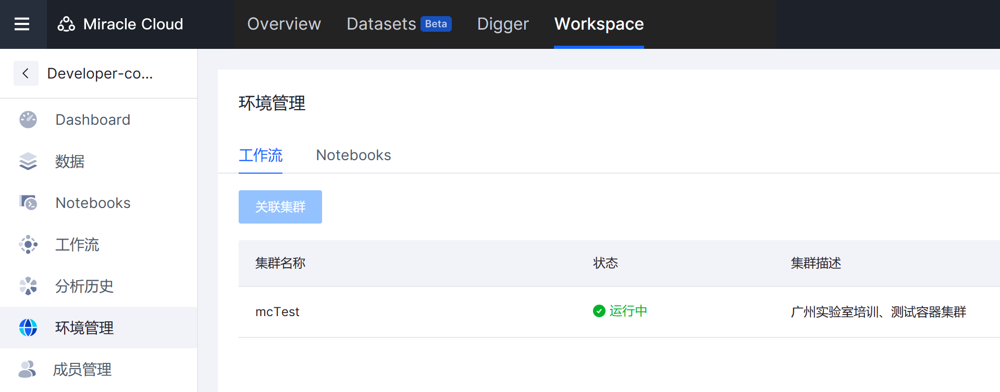
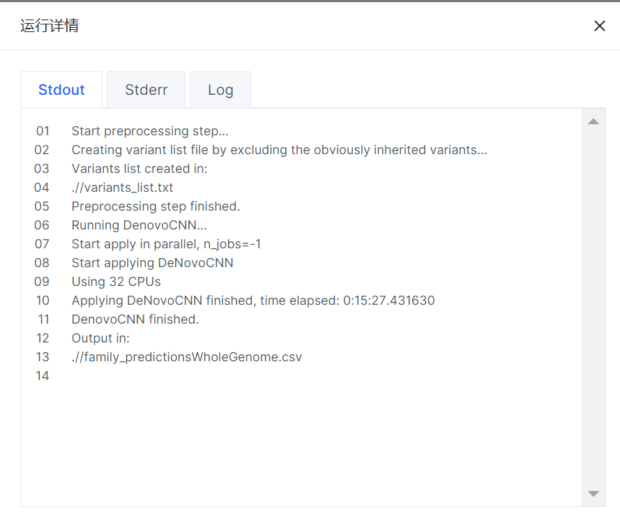

工作流开发者旅程实战-DenovoCNN
实战任务
使用公开 docker 镜像，完成 shell 脚本到 WDL 的封装，本地环境运行测试和云上工作流测试。
分析场景
分析目标：
在家系（父亲，母亲和孩子）WGS 数据中检测孩子基因组中 denovo mutations
分析软件：
DeNovoCNN
https://github.com/Genome-Bioinformatics-RadboudUMC/DeNovoCNN
需要完成的动作
- 完成本地 WDL 工作流封装、测试和工作流上传；
shell 脚本封装为 WDL 脚本
拉取公开镜像
准备好测试数据
完成本地测试运行
测试成功后上传WDL到代码仓库
- 完成工作流在 Miracle Cloud 中运行
完成工作流从代码仓库导入 Miracle Cloud
使用镜像仓库中的镜像
使用公共测试数据集和参考基因集
完成 Miracle Cloud 参数配置和运行
- Miracle Cloud 运行历史和结果查看
"**": 表示不需要执行部分
一、准备工作
电脑安装好虚拟机远程连接工具：Xshell .. ,等。
1.1 虚拟机登陆
通过远程工具登陆访问虚拟机，并执行是代码编辑工作。
(1) 虚拟机账号：
IP: 10.20.16.170
账号：mc_user
密码：AE1B4D9D1619
(2) 登陆方式：
- Mac 电脑通过 terminal 运行:
$ ssh mc_user@10.20.16.170
# 根据提示填写账号和密码
- Win10 电脑通过是 ssh 连接虚拟机
快捷键 win + R：
enter 键进入 cmd 界面，通过 ssh 登陆：
ssh mc_user@10.20.16.170
1.2 访问 Miracle Cloud 云平台
通过网页 IP 地址访问 Miracle Cloud 云平台。
(1) Miracle Cloud 账号：
网页链接地址: https://cloud.miracle.ac.cn/
主账号：training
子账号：名字拼音小写
初始密码：Pwd123456!
1.3 准备测试数据
查看并复制测试数据到虚拟机个人文件夹下
1.3.1 虚拟机测试数据准备
(1) 虚拟机个人文件夹准备：
登陆虚拟机，进入家目录；
创建个人文件夹：姓名全拼 （李昭强：lizhaoqiang）；
从并拷贝代码到本地，测试数据不用拷贝
#进入家目录
$ cd ~
# 创建个人文件夹
$ mkdir li_zq
(2) 虚拟机公共数据查看
查看虚拟机公共数据文件：测试代码，测试数据；
# 查看数据
$ ls /data/TrainData/01_code
## WDL代码和shell脚本
DenovoCNN.sh DenovoCNN.wdl input.json
## 测试数据
$ ls /data/TrainData/02_TestData
HCC-004-1.chr22.recode.vcf
HCC-004-1.recaled.chr22.bam
HCC-004-1.recaled.chr22.bam.bai
HCC-004-2.chr22.recode.vcf
HCC-004-2.recaled.chr22.bam
HCC-004-2.recaled.chr22.bam.bai
HCC-004-3.chr22.recode.vcf
HCC-004-3.recaled.chr22.bam
HCC-004-3.recaled.chr22.bam.bai
## 参考基因组数据
$ ls /data/TrainData/03_RefData
Homo_sapiens_assembly38.fasta
Homo_sapiens_assembly38.fasta.fai
(3) 复制测试代码到个人文件夹
## WDL代码和shell脚本
$ cp -r /data/TrainData/01_code ~/lizhaoqiang
1.3.2 Miracle Cloud 测试数据准备
从 Digger 仓库中将 Developer 拷贝到个人 Workspaces 空间。
(1) Digger 仓库查找 Developer Workspace：
碱基标签后下方“...”，选择复制，复制 Developer 到个人工作空间
(2) 在个人工作空间查看 Developer：
进入Workspace，查看Developer-copy中测试数据：
测试数据在 Digger 中 Workspace Developer中的路径：
1.4 软件镜像查看
登陆虚拟机后，通过命令行工具 docker 查看镜像：
$ docker images
REPOSITORY TAG IMAGE ID CREATED SIZE
busybox latest 7cfbbec8963d 9 days ago 4.86MB
registry-vpc.miracle.ac.cn/broad/denovocnn latest 3bc33e552eaa 7 months ago 4.42GB
$ docker inspect --format='{{.RepoDigests}}' registry-vpc.miracle.ac.cn/broad/denovocnn:latest
[registry-vpc.miracle.ac.cn/broad/denovocnn@sha256:3c1d9b914bcfbaa8f6e4c7199b5b924651938377c5b5aa5cd113bdd318606b9e]
显示镜像地址为：
registry-vpc.miracle.ac.cn/broad/denovocnn:latest
镜像 sha256 编号为：
registry-vpc.miracle.ac.cn/broad/denovocnn@sha256:3c1d9b914bcfbaa8f6e4c7199b5b924651938377c5b5aa5cd113bdd318606b9e
二、虚拟机命令行运行测试
在虚拟机个人文件夹下运行命令行脚本
2.1 查看命令行脚本
参考本文档 1.3.1 中（3）条：
# 进入个01_code文件夹中
$ cd 01_code
# 查看文件列表
$ ls ./
DenovoCNN.sh DenovoCNN.wdl input.json
# 查看命令行脚本DenovoCNN.sh内容
$ vim DenovoCNN.sh
DenovoCNN.sh 脚本内容如下:
#!/bin/bash
docker run -v "/data/TrainData":"/input1" \
-v $(pwd)"/Result":"/Result" \
registry-vpc.miracle.ac.cn/broad/denovocnn:latest /app/apply_denovocnn.sh \
--workdir=/Result \
--child-vcf=/input1/02_TestData/HCC-004-1.chr22.recode.vcf \
--father-vcf=/input1/02_TestData/HCC-004-2.chr22.recode.vcf \
--mother-vcf=/input1/02_TestData/HCC-004-3.chr22.recode.vcf \
--child-bam=/input1/02_TestData/HCC-004-1.recaled.chr22.bam\
--father-bam=/input1/02_TestData/HCC-004-2.recaled.chr22.bam \
--mother-bam=/input1/02_TestData/HCC-004-3.recaled.chr22.bam \
--snp-model=/app/models/snp \
--in-model=/app/models/ins \
--del-model=/app/models/del \
--genome=/input1/03_RefData/Homo_sapiens_assembly38.fasta \
--output=predictions.csv
退出 q:
2.2 命令行脚本测试运行
测试命令行脚本是否可运行。
运行时间比较长，资源紧张，会后尝试。
# 进入个人文件夹
$ cd ~/lizhaoqiang/01_code
# 运行脚本
$ ./DenovoCNN.sh
DenovoCNN finished.
Output in:
/Result/predictions.csv
## 运行结果文件：其中文件<strong>predictions.csv</strong><strong>是结果文件</strong>
$ ls Result/
child.vcf.gz child.vcf.gz.tbi
father.vcf.gz father.vcf.gz.tbi
mother.vcf.gz mother.vcf.gz.tbi
variants_list.txt <strong>predictions.csv</strong>
会上大家可以跳过运行，直接查看已有的运行结果
# 查看已经运行的历史结果
$ ls /home/mc_user/01_code/Result
child.vcf.gz child.vcf.gz.tbi
father.vcf.gz father.vcf.gz.tbi
mother.vcf.gz mother.vcf.gz.tbi
variants_list.txt <strong>predictions.csv</strong>
三、工作流封装和本地测试
明确工作流核心模块，将运行代码封装为 WDL 脚本，并完成本地测试运行。
核心代码如下：
bash /app/apply_denovocnn.sh \
--workdir=/Result \
--child-vcf=/input1/02_TestData/HCC-004-1.chr22.recode.vcf \
--father-vcf=/input1/02_TestData/HCC-004-2.chr22.recode.vcf \
--mother-vcf=/input1/02_TestData/HCC-004-3.chr22.recode.vcf \
--child-bam=/input1/02_TestData/HCC-004-1.recaled.chr22.bam\
--father-bam=/input1/02_TestData/HCC-004-2.recaled.chr22.bam \
--mother-bam=/input1/02_TestData/HCC-004-3.recaled.chr22.bam \
--snp-model=/app/models/snp \
--in-model=/app/models/ins \
--del-model=/app/models/del \
--genome=/input1/03_RefData/Homo_sapiens_assembly38.fasta \
--output=predictions.csv
3.1 工作流 task 定义
(1) 明确输入参数
明确 wdl 中要求全量的输入参数，包括命令行中不显示输入的文件：bam.bai 和 fasta.fai 文件。
明确 task 输入、输出变量类型
(2) WDL task command 编码
task 中的 command 部分就是命令行部分代码
WDL Task 定义：
command {
set -euo pipefail
bash /app/apply_denovocnn.sh \
-w=${WORKING_DIRECTORY} \
--child-vcf=${CHILD_VCF} \
--father-vcf=${FATHER_VCF} \
--mother-vcf=${MOTHER_VCF} \
--child-bam=${CHILD_BAM} \
--father-bam=${FATHER_BAM} \
--mother-bam=${MOTHER_BAM} \
--snp-model=${SNP_MODEL} \
--in-model=${INSERTION_MODEL} \
--del-model=${DELETION_MODEL} \
--genome=${REFERENCE_GENOME} \
--output=${OUTFILE_NAME}_predictions.csv
}
注意：
1. task commad Useful for debugging set -euo pipefail
set -euo pipefile can be useful when used as the first line within the command <<< >>> section of a WDL task. This command will help capture errors at the point where they occur in your unix code.
(2) WDL task 定义
WDL 常用变量类型：
String: 字符串类型
File: 文件类型
Int: 整型
定义：
输入文件:
输出文件：
task DenovoCNN {
input {
String WORKING_DIRECTORY
File CHILD_VCF
File FATHER_VCF
File MOTHER_VCF
File CHILD_BAM
File FATHER_BAM
File MOTHER_BAM
File CHILD_BAM_INDEX
File FATHER_BAM_INDEX
File MOTHER_BAM_INDEX
String SNP_MODEL
String INSERTION_MODEL
String DELETION_MODEL
File REFERENCE_GENOME
String OUTFILE_NAME
String docker
Int NUM_THREAD
Int MEMORY
Int DISK
}
command {
set -euo pipefail
bash apply_denovocnn.sh \
-w=${WORKING_DIRECTORY} \
-cv=${CHILD_VCF} \
-fv=${FATHER_VCF} \
-mv=${MOTHER_VCF} \
-cb=${CHILD_BAM} \
-fb=${FATHER_BAM} \
-mb=${MOTHER_BAM} \
-sm=${SNP_MODEL} \
-im=${INSERTION_MODEL} \
-dm=${DELETION_MODEL} \
-g=${REFERENCE_GENOME} \
-o=${OUTFILE_NAME}_predictions.csv
}
runtime {
docker: docker
cpu: "${NUM_THREAD}"
memory: "${MEMORY} GB"
disk: "${DISK} GB"
}
output {
File output_vcf="${WORKING_DIRECTORY}/${OUTFILE_NAME}_predictions.csv"
}
}
(2) Workflow 层面 WDL 封装
WDL 文件编写；创建一个工作流文件 DenovoCNN.wdl
$ vim DenovoCNN.wdl
复制一下内容到文件中后保存：
version 1.0
workflow DeNovoCNN{
meta {
description: " DeNovoCNN is a combination of three models for the calling of substitution, deletion and insertion DNMs"
}
input {
String WORKING_DIRECTORY
File CHILD_VCF
File FATHER_VCF
File MOTHER_VCF
File CHILD_BAM
File FATHER_BAM
File MOTHER_BAM
String SNP_MODEL
String INSERTION_MODEL
String DELETION_MODEL
File REFERENCE_GENOME
String OUTFILE_NAME
String docker
Int NUM_THREAD
Int MEMORY
Int DISK
}
call DenovoCNN {
input:
WORKING_DIRECTORY = WORKING_DIRECTORY,
CHILD_VCF = CHILD_VCF,
FATHER_VCF = FATHER_VCF,
MOTHER_VCF = MOTHER_VCF,
CHILD_BAM = CHILD_BAM,
FATHER_BAM = FATHER_BAM,
MOTHER_BAM = MOTHER_BAM,
CHILD_BAM_INDEX = CHILD_BAM_INDEX,
FATHER_BAM_INDEX = FATHER_BAM_INDEX,
MOTHER_BAM_INDEX = MOTHER_BAM_INDEX,
SNP_MODEL = SNP_MODEL,
INSERTION_MODEL =INSERTION_MODEL,
DELETION_MODEL = DELETION_MODEL,
REFERENCE_GENOME = REFERENCE_GENOME,
OUTFILE_NAME = OUTFILE_NAME,
docker = docker,
NUM_THREAD = NUM_THREAD,
MEMORY = MEMORY,
DISK = DISK
}
## workflow output
output {
File output_vcf=DenovoCNN.output_vcf
}
}
task DenovoCNN {
input {
String WORKING_DIRECTORY
File WORKING_DIRECTORY
File CHILD_VCF
File FATHER_VCF
File MOTHER_VCF
File CHILD_BAM
File FATHER_BAM
File MOTHER_BAM
File CHILD_BAM_INDEX
File FATHER_BAM_INDEX
File MOTHER_BAM_INDEX
String SNP_MODEL
String INSERTION_MODEL
String DELETION_MODEL
File REFERENCE_GENOME
String OUTFILE_NAME
String docker
Int NUM_THREAD
Int MEMORY
Int DISK
}
command {
set -euo pipefail
bash apply_denovocnn.sh \
-w=${WORKING_DIRECTORY} \
-cv=${CHILD_VCF} \
-fv=${FATHER_VCF} \
-mv=${MOTHER_VCF} \
-cb=${CHILD_BAM} \
-fb=${FATHER_BAM} \
-mb=${MOTHER_BAM} \
-sm=${SNP_MODEL} \
-im=${INSERTION_MODEL} \
-dm=${DELETION_MODEL} \
-g=${REFERENCE_GENOME} \
-o=${OUTFILE_NAME}_predictions.csv
}
runtime {
docker: docker
cpu: "${NUM_THREAD}"
memory: "${MEMORY} GB"
disk: "${DISK} GB"
}
output {
File output_vcf="${WORKING_DIRECTORY}/${OUTFILE_NAME}_predictions.csv"
}
}
3.2 本地 WDL 工作流测试运行
(1) WDL 语法校验及输入参数模板生成
- 使用 womtool 校验 WDL 语法
$ womtool validate DenovoCNN.wdl
- 使用womtool生成DenovoCNN.wdl脚本的输入文件模板input.json文件
$ womtool inputs DenovoCNN.wdl > input.json
完成 input.json 文件中输入参数的填写：
- 用引号括起来；
- 文件路径使用绝对路径；
- 参考数据
$ vim input.json
input.json 文件内容如下：
{
"DeNovoCNN.CHILD_BAM": "/data/TrainData/02_TestData/HCC-004-1.recaled.chr22.bam",
"DeNovoCNN.CHILD_BAM_INDEX": "/data/TrainData/02_TestData/HCC-004-1.recaled.chr22.bam.bai",
"DeNovoCNN.CHILD_VCF": "/data/TrainData/02_TestData/HCC-004-1.chr22.recode.vcf",
"DeNovoCNN.SNP_MODEL": "/app/models/snp",
"DeNovoCNN.FATHER_VCF": "/data/TrainData/02_TestData/HCC-004-2.chr22.recode.vcf",
"DeNovoCNN.DISK": "100",
"DeNovoCNN.INSERTION_MODEL": "/app/models/ins",
"DeNovoCNN.DELETION_MODEL": "/app/models/del",
"DeNovoCNN.OUTFILE_NAME": "Test",
"DeNovoCNN.FATHER_BAM_INDEX": "/data/TrainData/02_TestData/HCC-004-2.recaled.chr22.bam.bai",
"DeNovoCNN.FATHER_BAM": "/data/TrainData/02_TestData/HCC-004-2.recaled.chr22.bam",
"DeNovoCNN.NUM_THREAD": "10",
"DeNovoCNN.MEMORY": "50",
"DeNovoCNN.MOTHER_VCF": "/data/TrainData/02_TestData/HCC-004-3.chr22.recode.vcf",
"DeNovoCNN.docker": "registry-vpc.miracle.ac.cn/broad/denovocnn:latest",
"DeNovoCNN.MOTHER_BAM_INDEX": "/data/TrainData/02_TestData/HCC-004-3.recaled.chr22.bam.bai",
"DeNovoCNN.MOTHER_BAM": "/data/TrainData/02_TestData/HCC-004-3.recaled.chr22.bam",
"DeNovoCNN.WORKING_DIRECTORY": ".",
"DeNovoCNN.REFERENCE_GENOME": "/data/TrainData/03_RefData/Homo_sapiens_assembly38.fasta",
"DeNovoCNN.REFERENCE_GENOME_INDEX": "/data/TrainData/03_RefData/Homo_sapiens_assembly38.fasta.fai"
}
(2) 测试运行
使用 wdl 执行引擎 cromwell 运行 wdl 脚本
$ cromwell run -i input.json DenovoCNN.wdl
虚拟机资源有限，运行时间较长，建议会后操作；
(3) 运行结果查看
可以查看之前运行成功记录
$ ls /home/mc_user/01_code/cromwell-executions/DeNovoCNN/7bb0cdd2-0c0a-489f-ba4f-61aa0260d609/call-DenovoCNN/execution/
child.vcf.gz father.vcf.gz mother.vcf.gz.tbi
script.background stderr.background Test_predictions.csv
child.vcf.gz.tbi father.vcf.gz.tbi rc
script.submit stdout variants_list.txt
docker_cid mother.vcf.gz script
stderr stdout.background
$ head //home/mc_user/01_code/cromwell-executions/DeNovoCNN/7bb0cdd2-0c0a-489f-ba4f-61aa0260d609/call-DenovoCNN/execution/Test_predictions.csv
Chromosome Start position Reference Variant DeNovoCNN probability Child coverage Father coverage Mother coverage Child BAM Father BAM Mother BAM
chr22 10514994 G A 0.0 12 7 7 /cromwell-executions/DeNovoCNN/7bb0cdd2-0c0a-489f-ba4f-61aa0260d609/call-DenovoCNN/inputs/1384161030/HCC-004-1.recaled.chr22.bam /cromwell-executions/DeNovoCNN/7bb0cdd2-0c0a-489f-ba4f-61aa0260d609/call-DenovoCNN/inputs/1384161030/HCC-004-2.recaled.chr22.bam /cromwell-executions/DeNovoCNN/7bb0cdd2-0c0a-489f-ba4f-61aa0260d609/call-DenovoCNN/inputs/1384161030/HCC-004-3.recaled.chr22.bam
chr22 10515074 A AGAAAGAAG 0.038 9 1 5 /cromwell-executions/DeNovoCNN/7bb0cdd2-0c0a-489f-ba4f-61aa0260d609/call-DenovoCNN/inputs/1384161030/HCC-004-1.recaled.chr22.bam /cromwell-executions/DeNovoCNN/7bb0cdd2-0c0a-489f-ba4f-61aa0260d609/call-DenovoCNN/inputs/1384161030/HCC-004-2.recaled.chr22.bam /cromwell-executions/DeNovoCNN/7bb0cdd2-0c0a-489f-ba4f-61aa0260d609/call-DenovoCNN/inputs/1384161030/HCC-004-3.recaled.chr22.bam
chr22 10528753 CAAA C 0.001 14 9 1 /cromwell-executions/DeNovoCNN/7bb0cdd2-0c0a-489f-ba4f-61aa0260d609/call-DenovoCNN/inputs/1384161030/HCC-004-1.recaled.chr22.bam /cromwell-executions/DeNovoCNN/7bb0cdd2-0c0a-489f-ba4f-61aa0260d609/call-DenovoCNN/inputs/1384161030/HCC-004-2.recaled.chr22.bam /cromwell-executions/DeNovoCNN/7bb0cdd2-0c0a-489f-ba4f-61aa0260d609/call-DenovoCNN/inputs/1384161030/HCC-004-3.recaled.chr22.bam
chr22 10528753 CAAA CA 0.001 14 9 1 /cromwell-executions/DeNovoCNN/7bb0cdd2-0c0a-489f-ba4f-61aa0260d609/call-DenovoCNN/inputs/1384161030/HCC-004-1.recaled.chr22.bam /cromwell-executions/DeNovoCNN/7bb0cdd2-0c0a-489f-ba4f-61aa0260d609/call-DenovoCNN/inputs/1384161030/HCC-004-2.recaled.chr22.bam /cromwell-executions/DeNovoCNN/7bb0cdd2-0c0a-489f-ba4f-61aa0260d609/call-DenovoCNN/inputs/1384161030/HCC-004-3.recaled.chr22.bam
本地 WDL 测试运行小结：
有以上结果表明：
- WDL 脚本语法、语义没有问题；
- 输入文件完整；
- 输出文件定义合法；
- 容器没有问题；
- WDL 虚拟机测试成功：
可以开始 Miracle Cloud 运行测试
**四、WDL 上传代码仓库
Miracle Cloud 中工作流是通过代码仓库导入的；
目前支持的代码仓库有：
Github
Gitee
广州实验室本地化代码仓库 GitLab
本案例以广州实验室本地化代码仓库 GitLab 为例进行。
4.1 登陆代码仓库
网页地址：https://git.miracle.ac.cn/
登陆方式：
1.邮箱注册，需要审批通过；
2.通过 Miracle Cloud 账号登陆，vloc_login；
4.2 创建 Project 并上传 WDL 代码
建议是公开，私有仓库后期需要使用 token
五、Miracle Cloud（MC）工作流测试
在完成 3.2 本地测试成功后，在 Miracle Cloud 中正式大规模运行，还需要评估：
- WDL runtime 中计算资源配置
- 测试工作流在云计算环境下的稳定性
**5.1 从 Gitlab 中将工作流导入到 MC 中
在 Miracle Cloud 中创建一个工作空间 Devoloper；
进入 Workspace 工作流功能界面， 选择“导入工作流”功能：
明确工作流在代码仓库中的 git address, Tag, Token(非公开代码仓库)，main path;
填写对应信息点击“OK”
操作实例如下：
Name : DenovoCNN Git address: http://git.miracle.ac.cn/zhaoqiangli/denovocnn_wdl.git
Tag: main
Main path: pipes/WDL/workflows/DeNovoCNN.wdl
** 5.2 Data Model Preperation
整理数据必要的输入文件，上传到工作空间对应的存储空间。

明确需要上传的数据文件：
参考 Input.json 文件，输入文件如下：
"DeNovoCNN.CHILD_BAM": "/data/lzq/Software/DenovoCNN/TestData/chr22/HCC-004-1.recaled.chr22.bam",
"DeNovoCNN.CHILD_BAM_INDEX": "/data/lzq/Software/DenovoCNN/TestData/chr22/HCC-004-1.recaled.chr22.bam.bai",
"DeNovoCNN.CHILD_VCF": "/data/lzq/Software/DenovoCNN/TestData/chr22/HCC-004-1.chr22.recode.vcf",
"DeNovoCNN.FATHER_VCF": "/data/lzq/Software/DenovoCNN/TestData/chr22/HCC-004-2.chr22.recode.vcf",
"DeNovoCNN.FATHER_BAM_INDEX": "/data/lzq/Software/DenovoCNN/TestData/chr22/HCC-004-2.recaled.chr22.bam.bai",
"DeNovoCNN.FATHER_BAM": "/data/lzq/Software/DenovoCNN/TestData/chr22/HCC-004-2.recaled.chr22.bam",
"DeNovoCNN.MOTHER_VCF": "/data/lzq/Software/DenovoCNN/TestData/chr22/HCC-004-3.chr22.recode.vcf",
"DeNovoCNN.MOTHER_BAM_INDEX": "/data/lzq/Software/DenovoCNN/TestData/chr22/HCC-004-3.recaled.chr22.bam.bai",
"DeNovoCNN.MOTHER_BAM": "/data/lzq/Software/DenovoCNN/TestData/chr22/HCC-004-3.recaled.chr22.bam",
"DeNovoCNN.REFERENCE_GENOME": "/data/lzq/Reference/GZNL/broad_reference/v0/Homo_sapiens_assembly38.fasta"
三个样本， 每个样本的 bam,bam.bai, vcf 以及参考基因组 fasta 文件。
**5.2.1 Data upload
在工作空间中创建 Notebook，获取工作空间数据存储空间配置参数和数据上传方式。
通过 miraclecloud.cli 工具将数据从虚拟机上传到工作空间对应的是存储空间中。
数据上传的两种方式：
a) 点击上图中上传文件，通过 http 协议上传；
b) 通过 Miracle Cloud 数据上传工具 CLI（miraclecloud.cli），从本地虚拟机上传；
查看帮助文档：https://cloud.miracle.ac.cn/docs/6653/126131
查看数据列表：
数据-文件列表
export JUPYTERHUB_SERVER_NAME=wc*****************0g
export MIRACLE_ENDPOINT=https://*****
export MIRACLE_ACCESS_KEY=AKLT**************************************NiNjM
export MIRACLE_SECRET_KEY=WVdV**************************************************5XWQ==
注意：http 改为 https
## 主账号AK/SK
export JUPYTERHUB_SERVER_NAME=wcggjkmleig4cter9da80
export MIRACLE_ENDPOINT=https://bio-top.miracle.ac.cn
export MIRACLE_ACCESS_KEY=AKLTOWMzMzA1NzA4MDBmNDhhZDhiMWRlZTMxYzRhN2QxNGQ
export MIRACLE_SECRET_KEY=TW1NMk5EUmhOMk5rTm1NME5ETmpORGxoWm1KbFl6Z3pNbVJoT1dJeE9HSQ==
使用 CLI 命令行工具：miraclecloud.cli 上传数据
$ miraclecloud.cli upload 02_TestData/ / -r
数据上传完成后可以在 Workspace 中查看
**5.2.2 制作 Data Model
- 获取数据 S3 链接
两种方式：
(1) 少量数据可以直接网页复制；
(2) 大量数据使用 miraclecloud.cli 工具
在 Workspace 中创建 notebooks，在 notebooks 命令行中利用 CLI 获取数据 S3 链接。
# reference S3 path
for F in `miraclecloud.cli list / | grep Data`;
do
echo "s3://bioos-"${JUPYTERHUB_SERVER_NAME}"/"$F;
done
s3://bioos-wcggjkmleig4cter9da80/02_TestData/HCC-004-1.chr22.recode.vcf
s3://bioos-wcggjkmleig4cter9da80/02_TestData/HCC-004-1.recaled.chr22.bam
s3://bioos-wcggjkmleig4cter9da80/02_TestData/HCC-004-1.recaled.chr22.bam.bai
s3://bioos-wcggjkmleig4cter9da80/02_TestData/HCC-004-2.chr22.recode.vcf
s3://bioos-wcggjkmleig4cter9da80/02_TestData/HCC-004-2.recaled.chr22.bam
s3://bioos-wcggjkmleig4cter9da80/02_TestData/HCC-004-2.recaled.chr22.bam.bai
s3://bioos-wcggjkmleig4cter9da80/02_TestData/HCC-004-3.chr22.recode.vcf
s3://bioos-wcggjkmleig4cter9da80/02_TestData/HCC-004-3.recaled.chr22.bam
s3://bioos-wcggjkmleig4cter9da80/02_TestData/HCC-004-3.recaled.chr22.bam.bai
s3://bioos-wcggjkmleig4cter9da80/03_RefData/Homo_sapiens_assembly38.fasta
s3://bioos-wcggjkmleig4cter9da80/03_RefData/Homo_sapiens_assembly38.fasta.fai
- 下载实体数据模型模板
点击 数据 --> 实体数据模型(+) --> 下载 csv 文件模板
- 填写 Data Model
(1) 第一列列名命名命名规则，“_id” （例如：Sample_id）;Sample 会作为后期“实体数据模型”显示
(2) csv 表格中每一列的数据类型对应 WDL 变量类型
注意 csv 内容格式和 WDL 的格式兼容：
例如：gatk 中的 RG 参数： '@RG\tID:SRR11905267\tSM:\tPL:HiSeq X Ten'
- Workspace 数据模型
5.3 工作流运行
出于培训时间，网络等条件限制，实战课程跳过 WDL 工作流上传代码仓库，跳过工作流从代码仓库导入 Workspace 和数据实体表制作后；使用从 Digger 仓库中复制 Workspace，进入工作空间Developer-copy，进入工作流，上传一下配置文件进行分析。 JSON文件如下（点击下载）： inputs.json
- 配置计算环境
在环境管理中，工作流中关联集群
选择关联集群 mcTest:
关联成功显示：

- 进入工作流选择实体
- 进入 Workspace，从左边导航栏中进入到DenovoCNN工作流中
- 在运行选项中选择“以数据模型作为输入”，并选择实体名称（及实体模型表）
- 配置参数
在运行参数中填写输入参数和输出参数
本次实战中，采用上传 Json 的方式配置参数：
参数配置两种方式：
(1) 网页填写；
(2) 通过 Json 文件导入
配置参数：
"this." ：特指 “实体数据模型”这张表格中的是列；
"workspace.": 特指 “Workspace 数据模型”中的键值对；
- 运行分析
点击“开始分析”，启动分析

5.4 工作流运行结果查看
- 运行状态查看
分析历史中可以查看当前 Workspace 中所有工作流的运行历史状态，同时能够针对同一个工作流能够查看不同级别不同粒度的运行历史状态
- 投递历史记录查看：能够展示历次分析/投递/提交的历史，其中一次投递/提交可以包含一条或多条工作流的执行
- 工作流级别运行记录查看：能够展示一次投递中所有工作流的运行状态，其中一条工作流可以由一个或多个 task 组成
- task 级别运行记录查看：能够展示一次工作流运行中所有的 task 运行状态
投递历史记录：
工作流级别运行记录：
task 级别运行记录：
- 工作流运行状态查看
从分析历史进入，到 task 运行状态查看

目前运行状态有 6 种；
启动中：创建 taskmaster, input filer 等都属于启动中状态；
运行中：当前无可用调用资源，task 出于排队中；
运行成功：当前 task 运行成功，已完成；
运行失败：当前 task 运行失败；
终止中：当前 task 处于终止状态。
- task 运行资源监控
资源监控可以试试查看 task 计算资源实时试用情况，用于评估后续大规模运行 task 级别 runtime 内部计算资源合理配置。
在 task 级别运行记录中有显示 task 级别运行资源监控：
资源动态监控： 实时日志：
- 结果文件查看
运行结果文件存放在 数据-数据文件管理-analysis 文件夹中
通过对应工作流运行历史的投递 ID，可以在 analysis 中找到对应的结果文件，目录层次遵循 Cromwell 规范。
六、运行日志
6.1 Miracle Cloud 工作流运行详情
- 总体架构
PVC：PersistentVolumeClaim（持久卷申领）表达的是用户对存储的请求；
ETag: cache version identifier.
- 运行日志
两大类日志：
- 工作流级别运行日志：Workflow log/error 从 wes2cromwell 开始，
- task 级别运行日志（Pod）：log/stderr/stdout 从 taskmaster 开始
pending 从 taskmaster 开始

6.2 Miracle Cloud 工作流运行详情
6.2.1 task 级别运行详情:
两种查看方式：
- 在线查看方式
- 文件下载：cromwell 结果文件展示

task 执行过程，共 6 步：
- 挂载存储到计算环境
- 开始下载输入文件
- 创建执行 pod,运行任务
- 上传运行结果：从 K8s 计算环境上传到 Workspace 对象存储桶
- 数据上传完成后删除运行环境
03/27/2023 14:07:08 INFO: Starting taskmaster
## 挂载存储到计算环境
03/27/2023 14:07:08 INFO: Creating PVC: 'task-20486aa7-pvc'...
### 开始下载输入文件
03/27/2023 14:07:08 INFO: Creating job 'task-20486aa7-inputs-filer'...
03/27/2023 14:08:38 INFO: job 'task-20486aa7-inputs-filer' logs:
03/27/2023 14:08:38 INFO: pod task-20486aa7-inputs-filer-cxz22 log:
03/27/2023 14:07:31 INFO: Starting inputs filer...
03/27/2023 14:07:31 INFO: Processing file: /cromwell-executions/DeNovoCNN/0f5a18ea-773e-478a-9653-cdc81ad83542/call-denovoCNN/inputs/bioos-wcggjkmleig4cter9da80/02_TestData/HCC-004-3.recaled.chr22.bam
03/27/2023 14:07:31 INFO: TOSTransput downloading Type.File s3://bioos-wcggjkmleig4cter9da80/02_TestData/HCC-004-3.recaled.chr22.bam
03/27/2023 14:07:31 INFO: Downloading tos object: "bioos-wcggjkmleig4cter9da80/02_TestData/HCC-004-3.recaled.chr22.bam" Target: /cromwell-executions/DeNovoCNN/0f5a18ea-773e-478a-9653-cdc81ad83542/call-denovoCNN/inputs/bioos-wcggjkmleig4cter9da80/02_TestData/HCC-004-3.recaled.chr22.bam
03/27/2023 14:07:37 INFO: Processed file: /cromwell-executions/DeNovoCNN/0f5a18ea-773e-478a-9653-cdc81ad83542/call-denovoCNN/inputs/bioos-wcggjkmleig4cter9da80/02_TestData/HCC-004-3.recaled.chr22.bam
03/27/2023 14:07:37 INFO: Processing file: /cromwell-executions/DeNovoCNN/0f5a18ea-773e-478a-9653-cdc81ad83542/call-denovoCNN/inputs/bioos-wcggjkmleig4cter9da80/02_TestData/HCC-004-2.chr22.recode.vcf
03/27/2023 14:07:37 INFO: TOSTransput downloading Type.File s3://bioos-wcggjkmleig4cter9da80/02_TestData/HCC-004-2.chr22.recode.vcf
03/27/2023 14:07:37 INFO: Downloading tos object: "bioos-wcggjkmleig4cter9da80/02_TestData/HCC-004-2.chr22.recode.vcf" Target: /cromwell-executions/DeNovoCNN/0f5a18ea-773e-478a-9653-cdc81ad83542/call-denovoCNN/inputs/bioos-wcggjkmleig4cter9da80/02_TestData/HCC-004-2.chr22.recode.vcf
03/27/2023 14:07:37 INFO: Processed file: /cromwell-executions/DeNovoCNN/0f5a18ea-773e-478a-9653-cdc81ad83542/call-denovoCNN/inputs/bioos-wcggjkmleig4cter9da80/02_TestData/HCC-004-2.chr22.recode.vcf
03/27/2023 14:07:37 INFO: Processing file: /cromwell-executions/DeNovoCNN/0f5a18ea-773e-478a-9653-cdc81ad83542/call-denovoCNN/inputs/bioos-wcggjkmleig4cter9da80/02_TestData/HCC-004-3.recaled.chr22.bam.bai
03/27/2023 14:07:37 INFO: TOSTransput downloading Type.File s3://bioos-wcggjkmleig4cter9da80/02_TestData/HCC-004-3.recaled.chr22.bam.bai
03/27/2023 14:07:37 INFO: Downloading tos object: "bioos-wcggjkmleig4cter9da80/02_TestData/HCC-004-3.recaled.chr22.bam.bai" Target: /cromwell-executions/DeNovoCNN/0f5a18ea-773e-478a-9653-cdc81ad83542/call-denovoCNN/inputs/bioos-wcggjkmleig4cter9da80/02_TestData/HCC-004-3.recaled.chr22.bam.bai
03/27/2023 14:07:37 INFO: Processed file: /cromwell-executions/DeNovoCNN/0f5a18ea-773e-478a-9653-cdc81ad83542/call-denovoCNN/inputs/bioos-wcggjkmleig4cter9da80/02_TestData/HCC-004-3.recaled.chr22.bam.bai
03/27/2023 14:07:37 INFO: Processing file: /cromwell-executions/DeNovoCNN/0f5a18ea-773e-478a-9653-cdc81ad83542/call-denovoCNN/inputs/bioos-wcggjkmleig4cter9da80/02_TestData/HCC-004-2.recaled.chr22.bam.bai
03/27/2023 14:07:37 INFO: TOSTransput downloading Type.File s3://bioos-wcggjkmleig4cter9da80/02_TestData/HCC-004-2.recaled.chr22.bam.bai
03/27/2023 14:07:37 INFO: Downloading tos object: "bioos-wcggjkmleig4cter9da80/02_TestData/HCC-004-2.recaled.chr22.bam.bai" Target: /cromwell-executions/DeNovoCNN/0f5a18ea-773e-478a-9653-cdc81ad83542/call-denovoCNN/inputs/bioos-wcggjkmleig4cter9da80/02_TestData/HCC-004-2.recaled.chr22.bam.bai
03/27/2023 14:07:37 INFO: Processed file: /cromwell-executions/DeNovoCNN/0f5a18ea-773e-478a-9653-cdc81ad83542/call-denovoCNN/inputs/bioos-wcggjkmleig4cter9da80/02_TestData/HCC-004-2.recaled.chr22.bam.bai
03/27/2023 14:07:37 INFO: Processing file: /cromwell-executions/DeNovoCNN/0f5a18ea-773e-478a-9653-cdc81ad83542/call-denovoCNN/inputs/bioos-wcggjkmleig4cter9da80/03_RefData/Homo_sapiens_assembly38.fasta.fai
03/27/2023 14:07:37 INFO: TOSTransput downloading Type.File s3://bioos-wcggjkmleig4cter9da80/03_RefData/Homo_sapiens_assembly38.fasta.fai
03/27/2023 14:07:37 INFO: Downloading tos object: "bioos-wcggjkmleig4cter9da80/03_RefData/Homo_sapiens_assembly38.fasta.fai" Target: /cromwell-executions/DeNovoCNN/0f5a18ea-773e-478a-9653-cdc81ad83542/call-denovoCNN/inputs/bioos-wcggjkmleig4cter9da80/03_RefData/Homo_sapiens_assembly38.fasta.fai
03/27/2023 14:07:37 INFO: Processed file: /cromwell-executions/DeNovoCNN/0f5a18ea-773e-478a-9653-cdc81ad83542/call-denovoCNN/inputs/bioos-wcggjkmleig4cter9da80/03_RefData/Homo_sapiens_assembly38.fasta.fai
03/27/2023 14:07:37 INFO: Processing file: /cromwell-executions/DeNovoCNN/0f5a18ea-773e-478a-9653-cdc81ad83542/call-denovoCNN/inputs/bioos-wcggjkmleig4cter9da80/02_TestData/HCC-004-3.chr22.recode.vcf
03/27/2023 14:07:37 INFO: TOSTransput downloading Type.File s3://bioos-wcggjkmleig4cter9da80/02_TestData/HCC-004-3.chr22.recode.vcf
03/27/2023 14:07:37 INFO: Downloading tos object: "bioos-wcggjkmleig4cter9da80/02_TestData/HCC-004-3.chr22.recode.vcf" Target: /cromwell-executions/DeNovoCNN/0f5a18ea-773e-478a-9653-cdc81ad83542/call-denovoCNN/inputs/bioos-wcggjkmleig4cter9da80/02_TestData/HCC-004-3.chr22.recode.vcf
03/27/2023 14:07:37 INFO: Processed file: /cromwell-executions/DeNovoCNN/0f5a18ea-773e-478a-9653-cdc81ad83542/call-denovoCNN/inputs/bioos-wcggjkmleig4cter9da80/02_TestData/HCC-004-3.chr22.recode.vcf
03/27/2023 14:07:37 INFO: Processing file: /cromwell-executions/DeNovoCNN/0f5a18ea-773e-478a-9653-cdc81ad83542/call-denovoCNN/inputs/bioos-wcggjkmleig4cter9da80/02_TestData/HCC-004-1.chr22.recode.vcf
03/27/2023 14:07:37 INFO: TOSTransput downloading Type.File s3://bioos-wcggjkmleig4cter9da80/02_TestData/HCC-004-1.chr22.recode.vcf
03/27/2023 14:07:37 INFO: Downloading tos object: "bioos-wcggjkmleig4cter9da80/02_TestData/HCC-004-1.chr22.recode.vcf" Target: /cromwell-executions/DeNovoCNN/0f5a18ea-773e-478a-9653-cdc81ad83542/call-denovoCNN/inputs/bioos-wcggjkmleig4cter9da80/02_TestData/HCC-004-1.chr22.recode.vcf
03/27/2023 14:07:37 INFO: Processed file: /cromwell-executions/DeNovoCNN/0f5a18ea-773e-478a-9653-cdc81ad83542/call-denovoCNN/inputs/bioos-wcggjkmleig4cter9da80/02_TestData/HCC-004-1.chr22.recode.vcf
03/27/2023 14:07:37 INFO: Processing file: /cromwell-executions/DeNovoCNN/0f5a18ea-773e-478a-9653-cdc81ad83542/call-denovoCNN/inputs/bioos-wcggjkmleig4cter9da80/02_TestData/HCC-004-1.recaled.chr22.bam.bai
03/27/2023 14:07:37 INFO: TOSTransput downloading Type.File s3://bioos-wcggjkmleig4cter9da80/02_TestData/HCC-004-1.recaled.chr22.bam.bai
03/27/2023 14:07:37 INFO: Downloading tos object: "bioos-wcggjkmleig4cter9da80/02_TestData/HCC-004-1.recaled.chr22.bam.bai" Target: /cromwell-executions/DeNovoCNN/0f5a18ea-773e-478a-9653-cdc81ad83542/call-denovoCNN/inputs/bioos-wcggjkmleig4cter9da80/02_TestData/HCC-004-1.recaled.chr22.bam.bai
03/27/2023 14:07:37 INFO: Processed file: /cromwell-executions/DeNovoCNN/0f5a18ea-773e-478a-9653-cdc81ad83542/call-denovoCNN/inputs/bioos-wcggjkmleig4cter9da80/02_TestData/HCC-004-1.recaled.chr22.bam.bai
03/27/2023 14:07:37 INFO: Processing file: /cromwell-executions/DeNovoCNN/0f5a18ea-773e-478a-9653-cdc81ad83542/call-denovoCNN/inputs/bioos-wcggjkmleig4cter9da80/03_RefData/Homo_sapiens_assembly38.fasta
03/27/2023 14:07:37 INFO: TOSTransput downloading Type.File s3://bioos-wcggjkmleig4cter9da80/03_RefData/Homo_sapiens_assembly38.fasta
03/27/2023 14:07:37 INFO: Downloading tos object: "bioos-wcggjkmleig4cter9da80/03_RefData/Homo_sapiens_assembly38.fasta" Target: /cromwell-executions/DeNovoCNN/0f5a18ea-773e-478a-9653-cdc81ad83542/call-denovoCNN/inputs/bioos-wcggjkmleig4cter9da80/03_RefData/Homo_sapiens_assembly38.fasta
03/27/2023 14:08:11 INFO: Processed file: /cromwell-executions/DeNovoCNN/0f5a18ea-773e-478a-9653-cdc81ad83542/call-denovoCNN/inputs/bioos-wcggjkmleig4cter9da80/03_RefData/Homo_sapiens_assembly38.fasta
03/27/2023 14:08:11 INFO: Processing file: /cromwell-executions/DeNovoCNN/0f5a18ea-773e-478a-9653-cdc81ad83542/call-denovoCNN/inputs/bioos-wcggjkmleig4cter9da80/02_TestData/HCC-004-2.recaled.chr22.bam
03/27/2023 14:08:11 INFO: TOSTransput downloading Type.File s3://bioos-wcggjkmleig4cter9da80/02_TestData/HCC-004-2.recaled.chr22.bam
03/27/2023 14:08:11 INFO: Downloading tos object: "bioos-wcggjkmleig4cter9da80/02_TestData/HCC-004-2.recaled.chr22.bam" Target: /cromwell-executions/DeNovoCNN/0f5a18ea-773e-478a-9653-cdc81ad83542/call-denovoCNN/inputs/bioos-wcggjkmleig4cter9da80/02_TestData/HCC-004-2.recaled.chr22.bam
03/27/2023 14:08:18 INFO: Processed file: /cromwell-executions/DeNovoCNN/0f5a18ea-773e-478a-9653-cdc81ad83542/call-denovoCNN/inputs/bioos-wcggjkmleig4cter9da80/02_TestData/HCC-004-2.recaled.chr22.bam
03/27/2023 14:08:18 INFO: Processing file: /cromwell-executions/DeNovoCNN/0f5a18ea-773e-478a-9653-cdc81ad83542/call-denovoCNN/inputs/bioos-wcggjkmleig4cter9da80/02_TestData/HCC-004-1.recaled.chr22.bam
03/27/2023 14:08:18 INFO: TOSTransput downloading Type.File s3://bioos-wcggjkmleig4cter9da80/02_TestData/HCC-004-1.recaled.chr22.bam
03/27/2023 14:08:18 INFO: Downloading tos object: "bioos-wcggjkmleig4cter9da80/02_TestData/HCC-004-1.recaled.chr22.bam" Target: /cromwell-executions/DeNovoCNN/0f5a18ea-773e-478a-9653-cdc81ad83542/call-denovoCNN/inputs/bioos-wcggjkmleig4cter9da80/02_TestData/HCC-004-1.recaled.chr22.bam
03/27/2023 14:08:26 INFO: Processed file: /cromwell-executions/DeNovoCNN/0f5a18ea-773e-478a-9653-cdc81ad83542/call-denovoCNN/inputs/bioos-wcggjkmleig4cter9da80/02_TestData/HCC-004-1.recaled.chr22.bam
03/27/2023 14:08:26 INFO: Processing file: /cromwell-executions/DeNovoCNN/0f5a18ea-773e-478a-9653-cdc81ad83542/call-denovoCNN/execution/script
03/27/2023 14:08:26 INFO: TOSTransput downloading Type.File s3://bioos-wcggjkmleig4cter9da80/analysis/scggq5vdeig40ooi8425g/DeNovoCNN/0f5a18ea-773e-478a-9653-cdc81ad83542/call-denovoCNN/execution/script
03/27/2023 14:08:26 INFO: Downloading tos object: "bioos-wcggjkmleig4cter9da80/analysis/scggq5vdeig40ooi8425g/DeNovoCNN/0f5a18ea-773e-478a-9653-cdc81ad83542/call-denovoCNN/execution/script" Target: /cromwell-executions/DeNovoCNN/0f5a18ea-773e-478a-9653-cdc81ad83542/call-denovoCNN/execution/script
03/27/2023 14:08:26 INFO: Processed file: /cromwell-executions/DeNovoCNN/0f5a18ea-773e-478a-9653-cdc81ad83542/call-denovoCNN/execution/script
### 创建执行pod,运行任务
03/27/2023 14:08:38 INFO: Creating job 'task-20486aa7-ex-00'...
03/27/2023 14:25:40 INFO: job 'task-20486aa7-ex-00' logs:
03/27/2023 14:25:40 INFO: pod task-20486aa7-ex-00-h6rkr log:
### 上传运行结果：从K8s计算环境上传到Workspace对象存储桶
03/27/2023 14:25:40 INFO: Finished running executors, Complete
03/27/2023 14:25:40 INFO: Creating job 'task-20486aa7-outputs-filer'...
03/27/2023 14:26:10 INFO: job 'task-20486aa7-outputs-filer' logs:
03/27/2023 14:26:10 INFO: pod task-20486aa7-outputs-filer-crgjq log:
03/27/2023 14:25:41 INFO: Starting outputs filer...
03/27/2023 14:25:41 INFO: Processing file: /cromwell-executions/DeNovoCNN/0f5a18ea-773e-478a-9653-cdc81ad83542/call-denovoCNN/execution/rc
03/27/2023 14:25:41 INFO: TOSTransput uploading Type.File s3://bioos-wcggjkmleig4cter9da80/analysis/scggq5vdeig40ooi8425g/DeNovoCNN/0f5a18ea-773e-478a-9653-cdc81ad83542/call-denovoCNN/execution/rc
03/27/2023 14:25:41 INFO: Uploading tos object: "/cromwell-executions/DeNovoCNN/0f5a18ea-773e-478a-9653-cdc81ad83542/call-denovoCNN/execution/rc" Target: bioos-wcggjkmleig4cter9da80/analysis/scggq5vdeig40ooi8425g/DeNovoCNN/0f5a18ea-773e-478a-9653-cdc81ad83542/call-denovoCNN/execution/rc
03/27/2023 14:25:41 INFO: Processed file: /cromwell-executions/DeNovoCNN/0f5a18ea-773e-478a-9653-cdc81ad83542/call-denovoCNN/execution/rc
03/27/2023 14:25:41 INFO: Processing file: /cromwell-executions/DeNovoCNN/0f5a18ea-773e-478a-9653-cdc81ad83542/call-denovoCNN/execution/stdout
03/27/2023 14:25:41 INFO: TOSTransput uploading Type.File s3://bioos-wcggjkmleig4cter9da80/analysis/scggq5vdeig40ooi8425g/DeNovoCNN/0f5a18ea-773e-478a-9653-cdc81ad83542/call-denovoCNN/execution/stdout
03/27/2023 14:25:41 INFO: Uploading tos object: "/cromwell-executions/DeNovoCNN/0f5a18ea-773e-478a-9653-cdc81ad83542/call-denovoCNN/execution/stdout" Target: bioos-wcggjkmleig4cter9da80/analysis/scggq5vdeig40ooi8425g/DeNovoCNN/0f5a18ea-773e-478a-9653-cdc81ad83542/call-denovoCNN/execution/stdout
03/27/2023 14:25:41 INFO: Processed file: /cromwell-executions/DeNovoCNN/0f5a18ea-773e-478a-9653-cdc81ad83542/call-denovoCNN/execution/stdout
03/27/2023 14:25:41 INFO: Processing file: /cromwell-executions/DeNovoCNN/0f5a18ea-773e-478a-9653-cdc81ad83542/call-denovoCNN/execution/stderr
03/27/2023 14:25:41 INFO: TOSTransput uploading Type.File s3://bioos-wcggjkmleig4cter9da80/analysis/scggq5vdeig40ooi8425g/DeNovoCNN/0f5a18ea-773e-478a-9653-cdc81ad83542/call-denovoCNN/execution/stderr
03/27/2023 14:25:41 INFO: Uploading tos object: "/cromwell-executions/DeNovoCNN/0f5a18ea-773e-478a-9653-cdc81ad83542/call-denovoCNN/execution/stderr" Target: bioos-wcggjkmleig4cter9da80/analysis/scggq5vdeig40ooi8425g/DeNovoCNN/0f5a18ea-773e-478a-9653-cdc81ad83542/call-denovoCNN/execution/stderr
03/27/2023 14:25:41 INFO: Processed file: /cromwell-executions/DeNovoCNN/0f5a18ea-773e-478a-9653-cdc81ad83542/call-denovoCNN/execution/stderr
03/27/2023 14:25:41 INFO: Processing file: /cromwell-executions/DeNovoCNN/0f5a18ea-773e-478a-9653-cdc81ad83542/call-denovoCNN/execution/log
03/27/2023 14:25:41 INFO: TOSTransput uploading Type.File s3://bioos-wcggjkmleig4cter9da80/analysis/scggq5vdeig40ooi8425g/DeNovoCNN/0f5a18ea-773e-478a-9653-cdc81ad83542/call-denovoCNN/execution/log
03/27/2023 14:25:41 INFO: Uploading tos object: "/cromwell-executions/DeNovoCNN/0f5a18ea-773e-478a-9653-cdc81ad83542/call-denovoCNN/execution/log" Target: bioos-wcggjkmleig4cter9da80/analysis/scggq5vdeig40ooi8425g/DeNovoCNN/0f5a18ea-773e-478a-9653-cdc81ad83542/call-denovoCNN/execution/log
03/27/2023 14:25:41 INFO: Processed file: /cromwell-executions/DeNovoCNN/0f5a18ea-773e-478a-9653-cdc81ad83542/call-denovoCNN/execution/log
03/27/2023 14:25:41 INFO: Processing file: /cromwell-executions/DeNovoCNN/0f5a18ea-773e-478a-9653-cdc81ad83542/call-denovoCNN/execution/script
03/27/2023 14:25:41 INFO: TOSTransput uploading Type.File s3://bioos-wcggjkmleig4cter9da80/analysis/scggq5vdeig40ooi8425g/DeNovoCNN/0f5a18ea-773e-478a-9653-cdc81ad83542/call-denovoCNN/execution/script
03/27/2023 14:25:41 INFO: Uploading tos object: "/cromwell-executions/DeNovoCNN/0f5a18ea-773e-478a-9653-cdc81ad83542/call-denovoCNN/execution/script" Target: bioos-wcggjkmleig4cter9da80/analysis/scggq5vdeig40ooi8425g/DeNovoCNN/0f5a18ea-773e-478a-9653-cdc81ad83542/call-denovoCNN/execution/script
03/27/2023 14:25:41 INFO: Processed file: /cromwell-executions/DeNovoCNN/0f5a18ea-773e-478a-9653-cdc81ad83542/call-denovoCNN/execution/script
03/27/2023 14:25:41 INFO: Processing file: /cromwell-executions/DeNovoCNN/0f5a18ea-773e-478a-9653-cdc81ad83542/call-denovoCNN/execution/family_predictionsWholeGenome.csv
03/27/2023 14:25:41 INFO: TOSTransput uploading Type.File s3://bioos-wcggjkmleig4cter9da80/analysis/scggq5vdeig40ooi8425g/DeNovoCNN/0f5a18ea-773e-478a-9653-cdc81ad83542/call-denovoCNN/execution/family_predictionsWholeGenome.csv
03/27/2023 14:25:41 INFO: Uploading tos object: "/cromwell-executions/DeNovoCNN/0f5a18ea-773e-478a-9653-cdc81ad83542/call-denovoCNN/execution/family_predictionsWholeGenome.csv" Target: bioos-wcggjkmleig4cter9da80/analysis/scggq5vdeig40ooi8425g/DeNovoCNN/0f5a18ea-773e-478a-9653-cdc81ad83542/call-denovoCNN/execution/family_predictionsWholeGenome.csv
03/27/2023 14:25:41 INFO: Processed file: /cromwell-executions/DeNovoCNN/0f5a18ea-773e-478a-9653-cdc81ad83542/call-denovoCNN/execution/family_predictionsWholeGenome.csv
### 数据上传完成后删除运行环境
03/27/2023 14:26:10 INFO: Removing job: 'task-20486aa7-inputs-filer'...
03/27/2023 14:26:10 INFO: Removing job: 'task-20486aa7-ex-00'...
03/27/2023 14:26:10 INFO: Removing job: 'task-20486aa7-outputs-filer'...
03/27/2023 14:26:10 INFO: Removing PVC: 'task-20486aa7-pvc'...
03/27/2023 14:07:08 INFO: Starting taskmaster
## 挂载存储到计算环境
03/27/2023 14:07:08 INFO: Creating PVC: 'task-20486aa7-pvc'...
### 开始下载输入文件
03/27/2023 14:07:08 INFO: Creating job 'task-20486aa7-inputs-filer'...
03/27/2023 14:08:38 INFO: job 'task-20486aa7-inputs-filer' logs:
03/27/2023 14:08:38 INFO: pod task-20486aa7-inputs-filer-cxz22 log:
03/27/2023 14:07:31 INFO: Starting inputs filer...
.....
### 创建执行pod,运行任务
03/27/2023 14:08:38 INFO: Creating job 'task-20486aa7-ex-00'...
03/27/2023 14:25:40 INFO: job 'task-20486aa7-ex-00' logs:
03/27/2023 14:25:40 INFO: pod task-20486aa7-ex-00-h6rkr log:
...
### 上传运行结果：从K8s计算环境上传到Workspace对象存储桶
03/27/2023 14:25:40 INFO: Finished running executors, Complete
03/27/2023 14:25:40 INFO: Creating job 'task-20486aa7-outputs-filer'...
....
### 数据上传完成后删除运行环境
03/27/2023 14:26:10 INFO: Removing job: 'task-20486aa7-inputs-filer'...
03/27/2023 14:26:10 INFO: Removing job: 'task-20486aa7-ex-00'...
03/27/2023 14:26:10 INFO: Removing job: 'task-20486aa7-outputs-filer'...
03/27/2023 14:26:10 INFO: Removing PVC: 'task-20486aa7-pvc'...
6.2.2 workflow 级别运行详情:
cromwell 工作流解析过程，总共 10 步：
- 明确 WDL 的版本
- 明确 cromwell backend TES
- 判断 task 是否符合 callcache 的条件
- 解析的 shell 脚本
- 解析输出文件路径
- 解析输入文件路径
- 解析的 shell 脚本
- 启动计算环境，task 运行情况
- {task 运行过程}
- 工作流运行情况，写出结果
# cromwell识别WDL的版本
2023-03-27 14:06:55,947 INFO - MaterializeWorkflowDescriptorActor [UUID(0f5a18ea)]: Parsing workflow as WDL 1.0
# cromwell识别 backend TES协议
2023-03-27 14:06:55,996 INFO - MaterializeWorkflowDescriptorActor [UUID(0f5a18ea)]: Call-to-Backend assignments: DeNovoCNN.denovoCNN -> TES
2023-03-27 14:06:58,034 INFO - WorkflowExecutionActor-0f5a18ea-773e-478a-9653-cdc81ad83542 [UUID(0f5a18ea)]: Starting DeNovoCNN.denovoCNN
### 判断task是否符合callcache的条件
2023-03-27 14:07:05,683 INFO - 0f5a18ea-773e-478a-9653-cdc81ad83542-EngineJobExecutionActor-DeNovoCNN.denovoCNN:NA:1 [UUID(0f5a18ea)]: Could not copy a suitable cache hit for 0f5a18ea:DeNovoCNN.denovoCNN:-1:1. No copy attempts were made.
2023-03-27 14:07:05,714 INFO - TesAsyncBackendJobExecutionActor
### 解析的shell脚本
[UUID(0f5a18ea)DeNovoCNN.denovoCNN:NA:1]: `set -ex
ulimit -n 100000
if [ -z "$TMPDIR" ];
then
export TMPDIR=$(pwd)
fi
bash /app/apply_denovocnn.sh \
-w=./ \
--child-vcf=/cromwell-executions/DeNovoCNN/0f5a18ea-773e-478a-9653-cdc81ad83542/call-denovoCNN/inputs/bioos-wcggjkmleig4cter9da80/02_TestData/HCC-004-1.chr22.recode.vcf \
--father-vcf=/cromwell-executions/DeNovoCNN/0f5a18ea-773e-478a-9653-cdc81ad83542/call-denovoCNN/inputs/bioos-wcggjkmleig4cter9da80/02_TestData/HCC-004-2.chr22.recode.vcf \
--mother-vcf=/cromwell-executions/DeNovoCNN/0f5a18ea-773e-478a-9653-cdc81ad83542/call-denovoCNN/inputs/bioos-wcggjkmleig4cter9da80/02_TestData/HCC-004-3.chr22.recode.vcf \
--child-bam=/cromwell-executions/DeNovoCNN/0f5a18ea-773e-478a-9653-cdc81ad83542/call-denovoCNN/inputs/bioos-wcggjkmleig4cter9da80/02_TestData/HCC-004-1.recaled.chr22.bam \
--father-bam=/cromwell-executions/DeNovoCNN/0f5a18ea-773e-478a-9653-cdc81ad83542/call-denovoCNN/inputs/bioos-wcggjkmleig4cter9da80/02_TestData/HCC-004-2.recaled.chr22.bam \
--mother-bam=/cromwell-executions/DeNovoCNN/0f5a18ea-773e-478a-9653-cdc81ad83542/call-denovoCNN/inputs/bioos-wcggjkmleig4cter9da80/02_TestData/HCC-004-3.recaled.chr22.bam \
--snp-model=/app/models/snp \
--in-model=/app/models/ins \
--del-model=/app/models/del \
--genome=/cromwell-executions/DeNovoCNN/0f5a18ea-773e-478a-9653-cdc81ad83542/call-denovoCNN/inputs/bioos-wcggjkmleig4cter9da80/03_RefData/Homo_sapiens_assembly38.fasta \
--output=family_predictionsWholeGenome.csv`
### 解析输出文件路径
2023-03-27 14:07:05,715 INFO - TesAsyncBackendJobExecutionActor [UUID(0f5a18ea)DeNovoCNN.denovoCNN:NA:1]: Calculated TES outputs (found 6):
Output(Some(rc),Some(DeNovoCNN.denovoCNN.rc),Some(s3://bioos-wcggjkmleig4cter9da80/analysis/scggq5vdeig40ooi8425g/DeNovoCNN/0f5a18ea-773e-478a-9653-cdc81ad83542/call-denovoCNN/execution/rc),/cromwell-executions/DeNovoCNN/0f5a18ea-773e-478a-9653-cdc81ad83542/call-denovoCNN/execution/rc,Some(FILE))
Output(Some(stdout),Some(DeNovoCNN.denovoCNN.stdout),Some(s3://bioos-wcggjkmleig4cter9da80/analysis/scggq5vdeig40ooi8425g/DeNovoCNN/0f5a18ea-773e-478a-9653-cdc81ad83542/call-denovoCNN/execution/stdout),/cromwell-executions/DeNovoCNN/0f5a18ea-773e-478a-9653-cdc81ad83542/call-denovoCNN/execution/stdout,Some(FILE))
Output(Some(stderr),Some(DeNovoCNN.denovoCNN.stderr),Some(s3://bioos-wcggjkmleig4cter9da80/analysis/scggq5vdeig40ooi8425g/DeNovoCNN/0f5a18ea-773e-478a-9653-cdc81ad83542/call-denovoCNN/execution/stderr),/cromwell-executions/DeNovoCNN/0f5a18ea-773e-478a-9653-cdc81ad83542/call-denovoCNN/execution/stderr,Some(FILE))
Output(Some(log),Some(DeNovoCNN.denovoCNN.log),Some(s3://bioos-wcggjkmleig4cter9da80/analysis/scggq5vdeig40ooi8425g/DeNovoCNN/0f5a18ea-773e-478a-9653-cdc81ad83542/call-denovoCNN/execution/log),/cromwell-executions/DeNovoCNN/0f5a18ea-773e-478a-9653-cdc81ad83542/call-denovoCNN/execution/log,Some(FILE))
Output(Some(commandScript),Some(DeNovoCNN.denovoCNN.commandScript),Some(s3://bioos-wcggjkmleig4cter9da80/analysis/scggq5vdeig40ooi8425g/DeNovoCNN/0f5a18ea-773e-478a-9653-cdc81ad83542/call-denovoCNN/execution/script),/cromwell-executions/DeNovoCNN/0f5a18ea-773e-478a-9653-cdc81ad83542/call-denovoCNN/execution/script,Some(FILE))
Output(Some(DeNovoCNN.denovoCNN.output.0),Some(DeNovoCNN.denovoCNN.output.0),Some(s3://bioos-wcggjkmleig4cter9da80/analysis/scggq5vdeig40ooi8425g/DeNovoCNN/0f5a18ea-773e-478a-9653-cdc81ad83542/call-denovoCNN/execution/family_predictionsWholeGenome.csv),/cromwell-executions/DeNovoCNN/0f5a18ea-773e-478a-9653-cdc81ad83542/call-denovoCNN/execution/family_predictionsWholeGenome.csv,Some(FILE))
### cromwell 解析输入文件路径
2023-03-27 14:07:05,720 INFO - TesAsyncBackendJobExecutionActor [UUID(0f5a18ea)DeNovoCNN.denovoCNN:NA:1]: Calculated TES inputs (found 12):
Input(Some(DeNovoCNN.denovoCNN.MOTHER_BAM.0),Some(DeNovoCNN.DeNovoCNN.denovoCNN.MOTHER_BAM.0),Some(s3://bioos-wcggjkmleig4cter9da80/02_TestData/HCC-004-3.recaled.chr22.bam),/cromwell-executions/DeNovoCNN/0f5a18ea-773e-478a-9653-cdc81ad83542/call-denovoCNN/inputs/bioos-wcggjkmleig4cter9da80/02_TestData/HCC-004-3.recaled.chr22.bam,Some(FILE),None)
Input(Some(DeNovoCNN.denovoCNN.FATHER_VCF.0),Some(DeNovoCNN.DeNovoCNN.denovoCNN.FATHER_VCF.0),Some(s3://bioos-wcggjkmleig4cter9da80/02_TestData/HCC-004-2.chr22.recode.vcf),/cromwell-executions/DeNovoCNN/0f5a18ea-773e-478a-9653-cdc81ad83542/call-denovoCNN/inputs/bioos-wcggjkmleig4cter9da80/02_TestData/HCC-004-2.chr22.recode.vcf,Some(FILE),None)
Input(Some(DeNovoCNN.denovoCNN.MOTHER_BAM_INDEX.0),Some(DeNovoCNN.DeNovoCNN.denovoCNN.MOTHER_BAM_INDEX.0),Some(s3://bioos-wcggjkmleig4cter9da80/02_TestData/HCC-004-3.recaled.chr22.bam.bai),/cromwell-executions/DeNovoCNN/0f5a18ea-773e-478a-9653-cdc81ad83542/call-denovoCNN/inputs/bioos-wcggjkmleig4cter9da80/02_TestData/HCC-004-3.recaled.chr22.bam.bai,Some(FILE),None)
Input(Some(DeNovoCNN.denovoCNN.FATHER_BAM_INDEX.0),Some(DeNovoCNN.DeNovoCNN.denovoCNN.FATHER_BAM_INDEX.0),Some(s3://bioos-wcggjkmleig4cter9da80/02_TestData/HCC-004-2.recaled.chr22.bam.bai),/cromwell-executions/DeNovoCNN/0f5a18ea-773e-478a-9653-cdc81ad83542/call-denovoCNN/inputs/bioos-wcggjkmleig4cter9da80/02_TestData/HCC-004-2.recaled.chr22.bam.bai,Some(FILE),None)
Input(Some(DeNovoCNN.denovoCNN.REFERENCE_GENOME_INDEX.0),Some(DeNovoCNN.DeNovoCNN.denovoCNN.REFERENCE_GENOME_INDEX.0),Some(s3://bioos-wcggjkmleig4cter9da80/03_RefData/Homo_sapiens_assembly38.fasta.fai),/cromwell-executions/DeNovoCNN/0f5a18ea-773e-478a-9653-cdc81ad83542/call-denovoCNN/inputs/bioos-wcggjkmleig4cter9da80/03_RefData/Homo_sapiens_assembly38.fasta.fai,Some(FILE),None)
Input(Some(DeNovoCNN.denovoCNN.MOTHER_VCF.0),Some(DeNovoCNN.DeNovoCNN.denovoCNN.MOTHER_VCF.0),Some(s3://bioos-wcggjkmleig4cter9da80/02_TestData/HCC-004-3.chr22.recode.vcf),/cromwell-executions/DeNovoCNN/0f5a18ea-773e-478a-9653-cdc81ad83542/call-denovoCNN/inputs/bioos-wcggjkmleig4cter9da80/02_TestData/HCC-004-3.chr22.recode.vcf,Some(FILE),None)
Input(Some(DeNovoCNN.denovoCNN.CHILD_VCF.0),Some(DeNovoCNN.DeNovoCNN.denovoCNN.CHILD_VCF.0),Some(s3://bioos-wcggjkmleig4cter9da80/02_TestData/HCC-004-1.chr22.recode.vcf),/cromwell-executions/DeNovoCNN/0f5a18ea-773e-478a-9653-cdc81ad83542/call-denovoCNN/inputs/bioos-wcggjkmleig4cter9da80/02_TestData/HCC-004-1.chr22.recode.vcf,Some(FILE),None)
Input(Some(DeNovoCNN.denovoCNN.CHILD_BAM_INDEX.0),Some(DeNovoCNN.DeNovoCNN.denovoCNN.CHILD_BAM_INDEX.0),Some(s3://bioos-wcggjkmleig4cter9da80/02_TestData/HCC-004-1.recaled.chr22.bam.bai),/cromwell-executions/DeNovoCNN/0f5a18ea-773e-478a-9653-cdc81ad83542/call-denovoCNN/inputs/bioos-wcggjkmleig4cter9da80/02_TestData/HCC-004-1.recaled.chr22.bam.bai,Some(FILE),None)
Input(Some(DeNovoCNN.denovoCNN.REFERENCE_GENOME.0),Some(DeNovoCNN.DeNovoCNN.denovoCNN.REFERENCE_GENOME.0),Some(s3://bioos-wcggjkmleig4cter9da80/03_RefData/Homo_sapiens_assembly38.fasta),/cromwell-executions/DeNovoCNN/0f5a18ea-773e-478a-9653-cdc81ad83542/call-denovoCNN/inputs/bioos-wcggjkmleig4cter9da80/03_RefData/Homo_sapiens_assembly38.fasta,Some(FILE),None)
Input(Some(DeNovoCNN.denovoCNN.FATHER_BAM.0),Some(DeNovoCNN.DeNovoCNN.denovoCNN.FATHER_BAM.0),Some(s3://bioos-wcggjkmleig4cter9da80/02_TestData/HCC-004-2.recaled.chr22.bam),/cromwell-executions/DeNovoCNN/0f5a18ea-773e-478a-9653-cdc81ad83542/call-denovoCNN/inputs/bioos-wcggjkmleig4cter9da80/02_TestData/HCC-004-2.recaled.chr22.bam,Some(FILE),None)
Input(Some(DeNovoCNN.denovoCNN.CHILD_BAM.0),Some(DeNovoCNN.DeNovoCNN.denovoCNN.CHILD_BAM.0),Some(s3://bioos-wcggjkmleig4cter9da80/02_TestData/HCC-004-1.recaled.chr22.bam),/cromwell-executions/DeNovoCNN/0f5a18ea-773e-478a-9653-cdc81ad83542/call-denovoCNN/inputs/bioos-wcggjkmleig4cter9da80/02_TestData/HCC-004-1.recaled.chr22.bam,Some(FILE),None)
Input(Some(commandScript),Some(DeNovoCNN.denovoCNN.commandScript),Some(s3://bioos-wcggjkmleig4cter9da80/analysis/scggq5vdeig40ooi8425g/DeNovoCNN/0f5a18ea-773e-478a-9653-cdc81ad83542/call-denovoCNN/execution/script),/cromwell-executions/DeNovoCNN/0f5a18ea-773e-478a-9653-cdc81ad83542/call-denovoCNN/execution/script,Some(FILE),None)
### 解析的shell脚本
2023-03-27 14:07:05,720 INFO - TesAsyncBackendJobExecutionActor [UUID(0f5a18ea)DeNovoCNN.denovoCNN:NA:1]: `set -ex
ulimit -n 100000
if [ -z "$TMPDIR" ];
then
export TMPDIR=$(pwd)
fi
bash /app/apply_denovocnn.sh \
-w=./ \
--child-vcf=/cromwell-executions/DeNovoCNN/0f5a18ea-773e-478a-9653-cdc81ad83542/call-denovoCNN/inputs/bioos-wcggjkmleig4cter9da80/02_TestData/HCC-004-1.chr22.recode.vcf \
--father-vcf=/cromwell-executions/DeNovoCNN/0f5a18ea-773e-478a-9653-cdc81ad83542/call-denovoCNN/inputs/bioos-wcggjkmleig4cter9da80/02_TestData/HCC-004-2.chr22.recode.vcf \
--mother-vcf=/cromwell-executions/DeNovoCNN/0f5a18ea-773e-478a-9653-cdc81ad83542/call-denovoCNN/inputs/bioos-wcggjkmleig4cter9da80/02_TestData/HCC-004-3.chr22.recode.vcf \
--child-bam=/cromwell-executions/DeNovoCNN/0f5a18ea-773e-478a-9653-cdc81ad83542/call-denovoCNN/inputs/bioos-wcggjkmleig4cter9da80/02_TestData/HCC-004-1.recaled.chr22.bam \
--father-bam=/cromwell-executions/DeNovoCNN/0f5a18ea-773e-478a-9653-cdc81ad83542/call-denovoCNN/inputs/bioos-wcggjkmleig4cter9da80/02_TestData/HCC-004-2.recaled.chr22.bam \
--mother-bam=/cromwell-executions/DeNovoCNN/0f5a18ea-773e-478a-9653-cdc81ad83542/call-denovoCNN/inputs/bioos-wcggjkmleig4cter9da80/02_TestData/HCC-004-3.recaled.chr22.bam \
--snp-model=/app/models/snp \
--in-model=/app/models/ins \
--del-model=/app/models/del \
--genome=/cromwell-executions/DeNovoCNN/0f5a18ea-773e-478a-9653-cdc81ad83542/call-denovoCNN/inputs/bioos-wcggjkmleig4cter9da80/03_RefData/Homo_sapiens_assembly38.fasta \
--output=family_predictionsWholeGenome.csv`
### TESK 启动计算环境，task运行情况
2023-03-27 14:07:10,329 INFO - TesAsyncBackendJobExecutionActor [UUID(0f5a18ea)DeNovoCNN.denovoCNN:NA:1]: job id: task-20486aa7
2023-03-27 14:07:10,335 INFO - TesAsyncBackendJobExecutionActor [UUID(0f5a18ea)DeNovoCNN.denovoCNN:NA:1]: Status change from - to Running
2023-03-27 14:26:37,731 INFO - TesAsyncBackendJobExecutionActor [UUID(0f5a18ea)DeNovoCNN.denovoCNN:NA:1]: Job task-20486aa7 is complete
2023-03-27 14:26:37,731 INFO - TesAsyncBackendJobExecutionActor [UUID(0f5a18ea)DeNovoCNN.denovoCNN:NA:1]: Status change from Running to Complete
### cromwell工作流运行情况，写出结果
2023-03-27 14:26:42,245 INFO - WorkflowExecutionActor-0f5a18ea-773e-478a-9653-cdc81ad83542 [UUID(0f5a18ea)]: Workflow DeNovoCNN complete. Final Outputs:
{
"DeNovoCNN.output_vcf": "s3://bioos-wcggjkmleig4cter9da80/analysis/scggq5vdeig40ooi8425g/DeNovoCNN/0f5a18ea-773e-478a-9653-cdc81ad83542/call-denovoCNN/execution/family_predictionsWholeGenome.csv"
}
2023-03-27 14:26:42,248 INFO - $c [UUID(0f5a18ea)]: Copying workflow logs from /app/cromwell-workflow-logs/workflow.0f5a18ea-773e-478a-9653-cdc81ad83542.log to s3://bioos-wcggjkmleig4cter9da80/analysis/scggq5vdeig40ooi8425g/workflow.0f5a18ea-773e-478a-9653-cdc81ad83542.log
# cromwell识别WDL的版本
2023-03-27 14:06:55,947 INFO - MaterializeWorkflowDescriptorActor [UUID(0f5a18ea)]: Parsing workflow as WDL 1.0
# cromwell识别 backend TES协议
2023-03-27 14:06:55,996 INFO - MaterializeWorkflowDescriptorActor [UUID(0f5a18ea)]: Call-to-Backend assignments: DeNovoCNN.denovoCNN -> TES
2023-03-27 14:06:58,034 INFO - WorkflowExecutionActor-0f5a18ea-773e-478a-9653-cdc81ad83542 [UUID(0f5a18ea)]: Starting DeNovoCNN.denovoCNN
# 判断task是否符合callcache的条件
2023-03-27 14:07:05,683 INFO - 0f5a18ea-773e-478a-9653-cdc81ad83542-EngineJobExecutionActor-DeNovoCNN.denovoCNN:NA:1 [UUID(0f5a18ea)]: Could not copy a suitable cache hit for 0f5a18ea:DeNovoCNN.denovoCNN:-1:1. No copy attempts were made.
2023-03-27 14:07:05,714 INFO - TesAsyncBackendJobExecutionActor
# 解析的shell脚本
[UUID(0f5a18ea)DeNovoCNN.denovoCNN:NA:1]: `set -ex ....`
# 解析输出文件路径
2023-03-27 14:07:05,715 INFO - TesAsyncBackendJobExecutionActor [UUID(0f5a18ea)DeNovoCNN.denovoCNN:NA:1]: Calculated TES outputs (found 6):
....
# cromwell 解析输入文件路径
2023-03-27 14:07:05,720 INFO - TesAsyncBackendJobExecutionActor [UUID(0f5a18ea)DeNovoCNN.denovoCNN:NA:1]: Calculated TES inputs (found 12):
....
# 解析的shell脚本
2023-03-27 14:07:05,720 INFO - TesAsyncBackendJobExecutionActor [UUID(0f5a18ea)DeNovoCNN.denovoCNN:NA:1]: `set -ex .....`
# TESK 启动计算环境，task运行情况
2023-03-27 14:07:10,329 INFO - TesAsyncBackendJobExecutionActor [UUID(0f5a18ea)DeNovoCNN.denovoCNN:NA:1]: job id: task-20486aa7
2023-03-27 14:07:10,335 INFO - TesAsyncBackendJobExecutionActor [UUID(0f5a18ea)DeNovoCNN.denovoCNN:NA:1]: Status change from - to Running
2023-03-27 14:26:37,731 INFO - TesAsyncBackendJobExecutionActor [UUID(0f5a18ea)DeNovoCNN.denovoCNN:NA:1]: Job task-20486aa7 is complete
2023-03-27 14:26:37,731 INFO - TesAsyncBackendJobExecutionActor [UUID(0f5a18ea)DeNovoCNN.denovoCNN:NA:1]: Status change from Running to Complete
# cromwell工作流运行情况，写出结果
2023-03-27 14:26:42,245 INFO - WorkflowExecutionActor-0f5a18ea-773e-478a-9653-cdc81ad83542 [UUID(0f5a18ea)]: Workflow DeNovoCNN complete. Final Outputs:
{......}
**七、将工作流注册到 Dockstore
广州实验室本地化工作流仓库（Dockstore）积累了大量可用工作流。
7.1 登陆工作流仓库
链接地址：https://dockstore.miracle.ac.cn/
账号：推荐使用广州实验室本地化代码仓库(GZNL Gitlab)账号登陆
7.2 工作流注册
Dockstore 中工作流的基本单元是工作流，一个 Dockstore 中只包含一个工作流。
工作流中用 import 导入的工作流会同时被拉取显示在 Dockstore 中。
1.在 Dockstore 导航右上角的下拉菜单，点击进入/my-workflows
2.在页面左侧边栏上点击【+】的按钮
3.将出现一个窗口，询问您希望如何注册您的工具、工作流程或服务。选择【Registry custom remote workflows】
4.选择 Gitlab 仓库、工作流语言，填写工作流路径和名字，注册
5.注册工作流成功后，在页面右侧列出已注册的工作流列表，同时支持点击【Publish】【Refresh】进行发布和同步
八、经验总结
8.1 如何利用日志/报错定位报错点
工作流解析过程，总共 10 步：
- 明确 WDL 的版本
- 明确 cromwell backend TES
- 判断 task 是否符合 callcache 的条件
- 解析的 shell 脚本
- 解析输出文件路径
- 解析输入文件路径
- 解析的 shell 脚本
- 启动计算环境，task 运行情况
- {task 运行过程}
- 启动计算环境，工作流运行情况，写出结果
task 执行过程，共 6 步：
- 挂载存储到计算环境
- 开始下载输入文件
- 创建执行 pod,运行任务
- 上传运行结果：从 K8s 计算环境上传到 Workspace 对象存储桶
- 数据上传完成后删除运行环境
- 运行过程顺序执行；
- 错误原因根据
8.2 WDL 部分
在 WDL 的不同版本：
平台暂时支持 version 1.0
command 中的变量：
${A} 占位符，用于接收外部变量值
$A ：shell 内部正常变量
output：
只接受占位符形式的变量；对于 shell 变量生成的文件，需要用字符串
runtime 目前支持的属性：
"disks",
"memory",
"zones",
"continueOnReturnCode",
"cpu",
"noAddress",
"docker",
"queueArn",
"failOnStderr",
7.1 Docker Image Modification and Save
修改原本的 docker 镜像并保存修改，用于分析。
# 进入docker环境
docker run -it 镜像ID /bin/bash
# install vim
apt-get install vim
# 保存修改
docker commit 36655b872cf9 gelana/denovocnn_1
docker images | grep gelana/denovocnn
docker inspect gelana/denovocnn_1:latest
7.2 WDL 中利用相对路径索引输出
当遇到一些软件需要指定输出文件夹时，用绝对路径无法返回输出，这时用相对路径"."就可以实现。
Example json:
{
"DeNovoCNN.CHILD_BAM": "/data/lzq/Software/DenovoCNN/TestData/chr22/HCC-004-1.recaled.chr22.bam",
"DeNovoCNN.CHILD_BAM_INDEX": "/data/lzq/Software/DenovoCNN/TestData/chr22/HCC-004-1.recaled.chr22.bam.bai",
"DeNovoCNN.CHILD_VCF": "/data/lzq/Software/DenovoCNN/TestData/chr22/HCC-004-1.chr22.recode.vcf",
"DeNovoCNN.SNP_MODEL": "/app/models/snp",
"DeNovoCNN.FATHER_VCF": "/data/lzq/Software/DenovoCNN/TestData/chr22/HCC-004-2.chr22.recode.vcf",
"DeNovoCNN.DISK": "100",
"DeNovoCNN.INSERTION_MODEL": "/app/models/ins",
"DeNovoCNN.DELETION_MODEL": "/app/models/del",
"DeNovoCNN.OUTFILE_NAME": "Test",
"DeNovoCNN.FATHER_BAM_INDEX": "/data/lzq/Software/DenovoCNN/TestData/chr22/HCC-004-2.recaled.chr22.bam.bai",
"DeNovoCNN.FATHER_BAM": "/data/lzq/Software/DenovoCNN/TestData/chr22/HCC-004-2.recaled.chr22.bam",
"DeNovoCNN.NUM_THREAD": "10",
"DeNovoCNN.MEMORY": "50",
"DeNovoCNN.MOTHER_VCF": "/data/lzq/Software/DenovoCNN/TestData/chr22/HCC-004-3.chr22.recode.vcf",
"DeNovoCNN.docker": "gelana/denovocnn_1:latest",
"DeNovoCNN.MOTHER_BAM_INDEX": "/data/lzq/Software/DenovoCNN/TestData/chr22/HCC-004-3.recaled.chr22.bam.bai",
"DeNovoCNN.MOTHER_BAM": "/data/lzq/Software/DenovoCNN/TestData/chr22/HCC-004-3.recaled.chr22.bam",
"DeNovoCNN.WORKING_DIRECTORY": ".",
"DeNovoCNN.REFERENCE_GENOME": "/data/lzq/Reference/GZNL/broad_reference/v0/Homo_sapiens_assembly38.fasta"
}